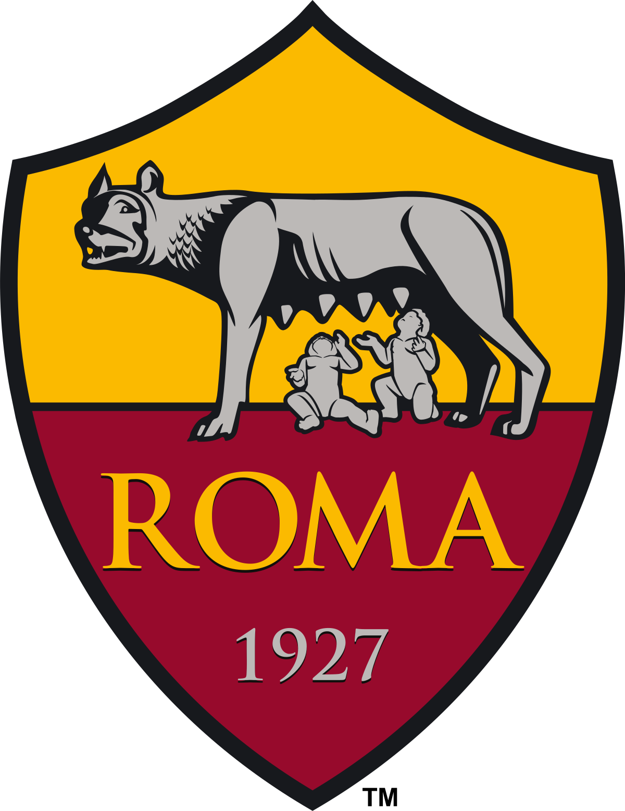

AFC Ajax, atau lebih dikenal sebagai Ajax Amsterdam, adalah salah satu klub sepak bola tersukses di Belanda dan Eropa. Klub ini didirikan pada 18 Maret 1900 di kota Amsterdam. Ajax dikenal luas karena masa kejayaannya di awal 1970-an di bawah pelatih Rinus Michels dan kemudian Stefan Kovacs. Mereka mengembangkan gaya bermain revolusioner bernama Total Football, dengan Johan Cruyff sebagai ikon utamanya. Pada masa itu, Ajax berhasil menjuarai Piala Champions (sekarang Liga Champions UEFA) tiga kali berturut-turut pada tahun 1971, 1972, dan 1973. Kebangkitan klub terjadi kembali pada era 1990-an di bawah pelatih Louis van Gaal, ketika mereka kembali menjuarai Liga Champions pada tahun 1995 dengan skuad muda berbakat seperti Patrick Kluivert, Clarence Seedorf, Edwin van der Sar, dan Edgar Davids. Selain prestasi di lapangan, Ajax juga dikenal dengan akademi mudanya yang bernama De Toekomst, yang telah menghasilkan banyak pemain kelas dunia. Sepanjang sejarahnya, Ajax telah memenangkan 36 gelar Eredivisie, 20 KNVB Cup, serta berbagai trofi Eropa termasuk 4 Liga Champions, 1 Piala UEFA, dan 1 Piala Winners. Filosofi sepak bola menyerang dan komitmen terhadap pengembangan pemain muda menjadikan Ajax sebagai klub yang sangat berpengaruh dalam dunia sepak bola.
AS Roma adalah klub sepak bola asal Italia yang didirikan pada 22 Juli 1927 dan bermarkas di Stadion Olimpico, Roma. Klub ini telah memenangkan 3 gelar Serie A, 9 Coppa Italia, dan meraih trofi Eropa pertamanya lewat UEFA Europa Conference League pada 2022. Roma dikenal dengan warna khas merah marun-kuning dan memiliki legenda seperti Francesco Totti dan Daniele De Rossi. Dengan basis suporter fanatik dan sejarah panjang, Roma menjadi salah satu klub paling ikonik di Italia.